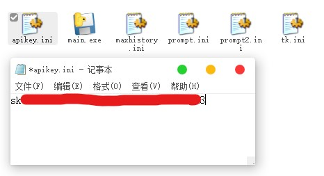

看标题就知道wmc发力了
有时候自己写代码挺孤独的，或者有什么不开心的事没人倾诉，正好可以整个AI给我提供点情绪价值（？
我突然想起自己半年前做过一个叫ChatCMD的项目
诶，我有一计！
私 天才じゃないの？
因为之前我做过ChatCMD（下方是ChatCMD截图），理论上来说Copy下以前的代码就行了，但我添加了许多功能，所以还是遇到了点问题
最初版的ChatCMD核心是用Python做的，界面用易语言抠的，做工非常粗糙，还不支持多轮对话，主要功能就是用户输入指令，以Windows CMD指令返回，比如用户要求打开任务管理器，就会在cmd里执行taskmgr什么的
现在我的想法是让这个程序支持联网访问，因为我用过大部分AI都不能访问一个指定的URL，联网搜索功能又不准，如果先用requests库把要的网页爬下来再给AI处理就好了，这样的话那些晦涩难懂的在线文档就能交给AI啃
还有就是让这个AI可以读取文件，这个也不难，直接with open然后把东西传进去就行了
现在还要给AI一个合适的人设，写一个prompt。纱露朵（ソルト）是我在maimai中最喜欢的角色，那就以她为设定好了
我们尝试调用DeepSeek API，请看下方代码
import json
import os
import requests
from ollama import ChatResponse, chat
from openai import OpenAI
from win11toast import toast
CONTEXT_FILE = "context.json"
MAX_HISTORY = 1000
client = OpenAI(
api_key="你的APIKey", base_url="https://api.deepseek.com"
)
with open("file.dat", "r", encoding="utf-8", errors="ignore") as i:
infile = i.read()
# 自动加载历史 context
if os.path.exists(CONTEXT_FILE):
with open(CONTEXT_FILE, "r", encoding="utf-8") as f:
send = json.load(f)
f.close
else:
with open("prompt.ini", "r", encoding="utf-8", errors="ignore") as f:
prompt = f.read()
f.close()
with open("prompt2.ini", "r", encoding="utf-8", errors="ignore") as g:
prompt2 = g.read()
g.close()
send = [
{
"role": "system",
"content": prompt,
},
{
"role": "system",
"content": prompt2,
},
]
content = ""
mode = "2"
while True:
try:
a = toast("回复 ソルト", content, input="...", buttons=["发送", "结束会话"])
print(a)
except TypeError:
exit()
else:
a = a["user_input"]["..."]
if a == "/quit":
# 保存 context
with open(CONTEXT_FILE, "w", encoding="utf-8") as f:
json.dump(send, f, ensure_ascii=False, indent=2)
# 关闭 Ollama
if mode == "1":
os.system("ollama stop qwen2.5vl:7b")
break
elif a[0:4] == "/web":
netdown = requests.get(a[5:])
a = toast(
"已经爬取到网页啦",
a[5:] + "下载完成，下一步该干什么呢？",
input="...",
button="发送",
)
a = a["user_input"]["..."]
send.append({"role": "user", "content": netdown.text})
send.append({"role": "user", "content": a})
elif a[0:5] == "/file":
send.append({"role": "user", "content": a[6:]})
send.append({"role": "user", "content": infile})
elif a[0:4] == "/cmd":
os.system(a[5:])
break
else:
send.append({"role": "user", "content": a})
# 节省 token，只保留最近 MAX_HISTORY 条
context_to_send = [send[0]] + send[-MAX_HISTORY:]
if mode == "1":
response: ChatResponse = chat(
model="qwen2.5vl:7b", messages=context_to_send
)
content = response.message.content
elif mode == "2":
response = client.chat.completions.create(
model="deepseek-chat", messages=context_to_send, stream=False
) # type: ignore
content = response.choices[0].message.content
send.append({"role": "assistant", "content": content})
if a[0:4] == "@bat":
b = toast(
"是否允许 ソルト 执行此命令？",
content,
buttons=["允许", "查看", "拒绝"],
)
if str(b) == "{'arguments': 'http:允许', 'user_input': {}}":
os.system(str(content))
continue
elif str(b) == "{'arguments': 'http:查看', 'user_input': {}}":
with open("temp.txt", "w", encoding="utf-8", errors="ignore") as temp:
temp.write(content)
temp.close()
os.system("notepad temp.txt")
elif str(b) == "{'arguments': 'http:拒绝', 'user_input': {}}":
send.append({"role": "system", "content": "用户拒绝你提供的指令"})
else:
b = toast("ソルト", content, buttons=["回复", "查看", "关闭会话"])
if str(b) == "{'arguments': 'http:查看', 'user_input': {}}":
with open("temp.txt", "w", encoding="utf-8", errors="ignore") as temp:
temp.write(content)
temp.close()
os.system("notepad temp.txt")
elif str(b) == "{'arguments': 'http:关闭会话', 'user_input': {}}":
break
exit()
是不是感觉要炸了？我们慢慢来
首先这个程序有双模式，Ollama本地部署或者DeepSeekAPI，但是实测本地部署的模型太傻逼了，所以我写死了mode=1
接着我们会传入两个系统级提示词，提示词包括两个部分，role和content，role就是角色，比如system，user什么的，content就是你要发的内容